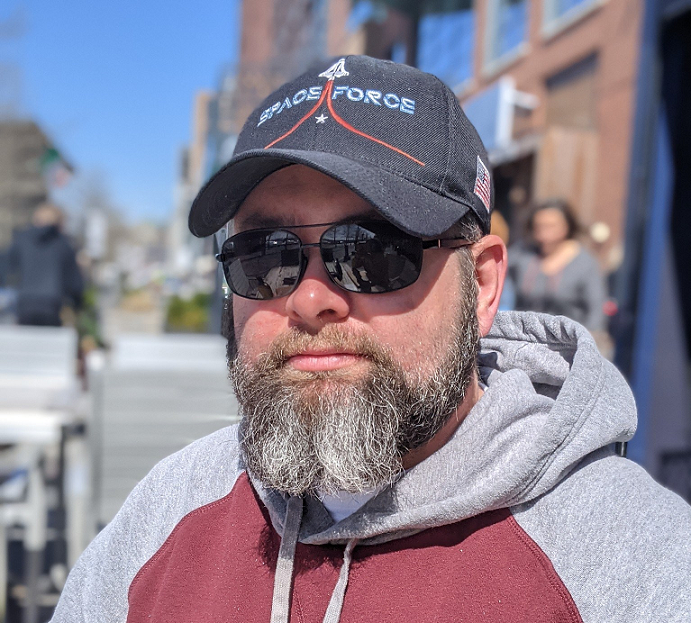

John G. West III
Software Developer
John West is a Software Developer with expertise in multiple languages including C++, Java, Python, SQL, and Ada. After serving honorably for 10 years as a U.S. Army Infantryman, John earned his B.S. in Computing Science from Sam Houston State University and is currently pursuing his M.S. in Computer and Data Science.